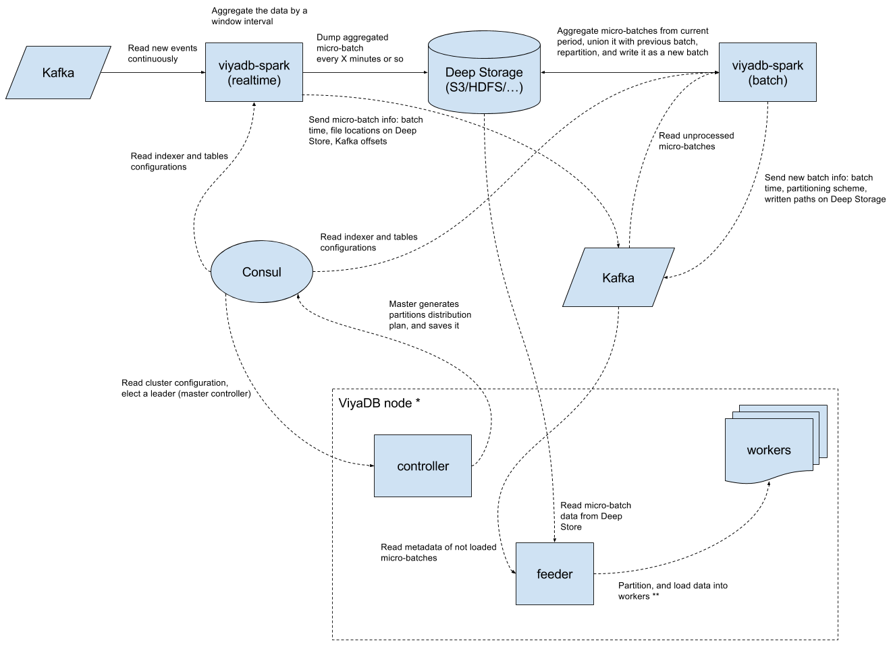

Real-Time Architecture¶
This section describes how ViyaDB can be leveraged for building a real-time analytics pipeline, capable of processing millions of events in a second.
ViyaDB implements shared nothing architecture, which means that workers hold partitions of data independently from each other. This allows for many possible implementations of real-time analytics architecture depending on business requirements and/or restrictions you might have.
Below is one of possible implementations of real-time analytics pipeline based on ViyaDB.
Diagram¶

Components¶
Let's describe all the components of this particular data processing implementation, and how they help gather insights off of hundreds of thousands of events per second in real-time.
Consul¶
Consul or technologies alike are irreplaceable in any distributed application, where different components need agree on something. In our case, Consul will be used for two things:
- Central configuration storage
- Coordination of ViyaDB cluster nodes
The quickest way to setup Consul is using Docker:
docker run --rm -ti --name viyadb-consul -p 8500:8500 consul
Kafka¶
Kafka is a de facto standard messaging systeam in the industry for delivering events, thus it was chosen as the first supported data source. We leverage Kafka also for storing and exchanging various metadata between different components.
If you don't have any Kafka, please start one using Kafka Quickstart documentation.
Deep Store¶
Deep Store is a place on some kind of distributed file system or object store for keeping Indexer results. In fact, the copy of all the data is always stored there, which facilitates data repair and data recovery.
File systems support
For now, only POSIX-compilant file systems and Amazon S3 are supported.
Indexer¶
This component consists of two sub-components:
- Real-time processor
- Batch processor
The first component represents Spark Streaming based application whose task is to read events from Kafka, and pre-aggregate them into micro-batches for loading into ViyaDB. The second part is invoked periodically, and it aims at compacting previous micro-batches and creating the best data partitioning plan.
Spark cluster is required for running the Indexer at high scale. For testing purposes it's enough to just download and extract latest Apache Spark package.
To read more about the Indexer, please refer to the README file of the project.
ViyaDB¶
This is the database cluster itself. Every physical node of the cluster consists of supervisor process, which spawns worker processes by the number of available CPU. Node controller running on every node deals with loading data into worker processes. In addition, controller also redirects database queries to a worker node containing required data partition, based on query filter (or queries needed workers, and aggregates results).
Configuration¶
Table configuration¶
This configuration defines database table structure, what event fields represent dimensions, and which ones are metrics. See Creating Tables section for more on table configuration.
{ "name": "events", "dimensions": [ {"name": "app_id"}, {"name": "user_id", "type": "uint"}, { "name": "event_time", "type": "time", "format": "millis", "granularity": "day" }, {"name": "country"}, {"name": "city"}, {"name": "device_type"}, {"name": "device_vendor"}, {"name": "ad_network"}, {"name": "campaign"}, {"name": "site_id"}, {"name": "event_type"}, {"name": "event_name"}, {"name": "organic", "cardinality": 2}, {"name": "days_from_install", "type": "ushort"} ], "metrics": [ {"name": "revenue" , "type": "double_sum"}, {"name": "users", "type": "bitset", "field": "user_id", "max": 4294967295}, {"name": "count" , "type": "count"} ] }
To load this configuration into Consul, store this JSON in file table.json, and run:
curl --request PUT --data @table.json \
http://<consul-host>:8500/v1/kv/viyadb/tables/events/config
Indexer configuration¶
The following section tells Indexer where to read data from, what's the data format (supported formats are: JSON, CSV), what are micro-batch and big batch window sizes, etc.
{ "tables":[ "events" ], "deepStorePath":"s3://viyadb-deepstore", "realTime":{ "windowDuration":"PT15S", "kafkaSource":{ "topics":[ "events" ], "brokers":[ "kafka-host:9092" ] }, "parseSpec":{ "format":"json", "timeColumn":{ "name":"event_time" } }, "notifier":{ "type":"kafka", "channel":"kafka-host:9092", "queue":"rt-notifications" } }, "batch":{ "partitioning":{ "columns":[ "app_id" ], "partitions":16 }, "notifier":{ "type":"kafka", "channel":"kafka-host:9092", "queue":"batch-notifications" } } }
Replace kafka-host:9090 with comma separated list of your actual Kafka brokers.
To load this configuration into Consul, store this JSON in file indexer.json, and run:
curl --request PUT --data @indexer.json \
http://<consul-host>:8500/v1/kv/viyadb/indexers/main/config
Cluster configuration¶
This configuration tells ViyaDB controller what tables to create, and which indexers to pull the data from.
{ "replication_factor": 2, "workers": 32, "tables": ["events"], "indexers": ["main"] }
Currently, the number of expected workers must be set explicitly in cluster configuration. This is the total number of nodes multiplied by the number of CPU cores on each machine. Using this configuration, two copies of a single partition will be placed on two different workers.
To load this configuration into Consul, store this JSON in file cluster.json, and run:
curl --request PUT --data @cluster.json \
http://<consul-host>:8500/v1/kv/viyadb/clusters/cluster001/config
Starting components¶
Mobile user activity simulator¶
Let's run a simulator, which will inject some synthetic data representing mobile app user activity into Kafka:
docker run --log-driver=none --rm -ti viyadb/events-generator:latest | \ kafka-console-producer.sh --broker-list <kafka-host>:9092 \ --topic events >/dev/null
Indexer process¶
Once the configuration part is done, we can start the Indexer process. The following command is tuned for running Indexer in a limited Spark local mode environment, please tune it according to your Spark cluster capacity and events rate.
wget -q \ https://github.com/viyadb/viyadb-spark/releases/download/v0.0.2/viyadb-spark_2.11-0.0.2-uberjar.jar spark-submit --executor-memory 2G \ --conf spark.streaming.kafka.maxRatePerPartition=10000 \ --conf spark.sql.shuffle.partitions=1 \ --class com.github.viyadb.spark.streaming.Job \ viyadb-spark_2.11-0.0.2-uberjar.jar \ --indexer-id "main"
Database cluster¶
Now it's the time to start ViyaDB cluster. Repeat the following procedure for every node (we'll start 4 nodes):
mkdir /tmp/viyadb cat >/tmp/viyadb/conf.json <<EOF { "supervise": true, "workers": 8, "cluster_id": "cluster001", "consul_url": "http://consul-host:8500", "state_dir": "/var/lib/viyadb" } EOF docker run --rm -ti \ -p 5000-5007:5000-5007 \ -p 5555:5555 \ -v /tmp/viyadb:/var/lib/viyadb:rw \ viyadb/viyadb:latest \ /opt/viyadb/bin/viyad /var/lib/viyadb/conf.json
Querying¶
Once all components are started and running, we can start sending some queries.
Multiple options to query ViyaDB exist, such as REST API or Zeppelin interpreter, but we'll just use SQL shell for this test.
Start the shell, and provide it with a hostname of one of ViyaDB cluster nodes, and a controller port number:
docker run --rm -ti viyadb/viyadb:latest \ /opt/viyadb/bin/vsql viyadb-host 5555
Top 10 cities by distinct users count¶
ViyaDB> SELECT city, users FROM events WHERE app_id='kik.android' and city <> '' ORDER BY users DESC LIMIT 10; city users ---- ----- Kowloon 76 Tsuen Wan 74 Yuen Long Kau Hui 70 Hong Kong 67 Azur 9 Qiryat Ono 9 Tayibe 9 Ganne Tiqwa 8 Sederot 7 Abu Ghosh 7 Time taken: 0.012320 secs
User retention query¶
ViyaDB> SELECT ad_network, days_from_install, users FROM events WHERE app_id='kik.android' AND event_time BETWEEN '2015-01-01' AND '2015-01-31' AND event_type='session' AND ad_network IN('Facebook', 'Google', 'Twitter') ORDER BY days_from_install; ad_network days_from_install users ---------- ----------------- ----- Twitter 0 573 Google 0 623 Facebook 0 595 Google 1 427 Facebook 1 410 Twitter 1 398 Twitter 2 263 Google 2 250 Facebook 2 253 Twitter 3 112 Facebook 3 105 Google 3 106 Twitter 4 9 Facebook 4 8 Google 4 12 Time taken: 0.057661 secs
Work in progress¶
This is just the beginning, and most functionality like cluster management and monitoring is still missing, but we're working on it.